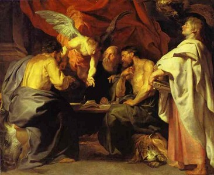

耶稣基督在印度西藏足迹的追寻
冯冯
Mygod123 / 誊录
基督教的圣经新约全书，以四大福音称为基础，四大福音书，是耶稣基督的及身亲信门徒马太、路加、约翰、马可等四位圣徒所写，记录下耶稣的言行及宝训事迹，基督教学者与历史学者公认四福音书是各圣徒亲近耶稣的第一手资料，绝对可靠可信，写作时代推断是在公元后六十年至一百年之间，是断断续续写成，后来才汇编成册。
四大福音书，都从耶稣降生前开始叙述，对于耶稣的法身来历(上帝的独生子)，及其应身(肉身降生为圣处女玛利亚之子)，诞生于伯利恒旅次马槽 ，俗世的法律上父亲是木匠约瑟……等等都叙述得很详尽，但未多提及圣母玛利亚与圣约瑟携带耶稣逃避犹太王的暴政，一家三口逃往埃及的详情。四福音只提到耶稣在十二岁之时出现于犹太教神庙，讲道折服犹太教长老，以后，完全没有提及耶稣从十二岁起到三十一二岁重返耶路撤冷传道此一期间的事迹。四福音显然显注重耶稣的神性与其上十字架的牺牲精神，而不注重耶稣未在以色列传道以前的十八至二十九年的言行事迹，这样漏列了耶稣的言教身教纪录，对于基督教徒与非教徒，都是莫大损失。四大福音既是耶稣的人间及身门徒，对于耶稣的一言一行，纪录自然是务求翔实，不可能这样疏忽。也无可能四位圣徙相约不提耶稣的十八至二十年的言行，很多学者推论四位圣徒必然曾有记述，不幸全文可能佚失，或是在公元四世纪教廷编辑圣经之时，由于某种原因，将四福音的此一部份全部删除，再经历代的左删右改，或增或减，以致今日所见到的圣经四福音已是面目全非、支离破碎，虽亦经润饰，终难掩其中的缺陷。
由于四福音现传本子全无记叙耶稣失年代言行，就有不少非宗教的学者从人文观点及逻辑来断言：‘历史上并无耶稣其人，’‘耶稣只是虚构的人物。’等等武断的论调。这恐怕不是四世纪或中古时代教廷编辑者所能始料的不良后果。
四世纪或中古时代的教廷编辑者，为什么要删除四福音当中的耶稣十八至二十年事迹 (以下简称为‘失踪年代’)？从现代常识来推测，很可能是当时的编辑人认为失踪年代(一) 不够重要，不足以代表耶稣的教行，(二)不可靠， (三)有破坏或触犯基督的神圣形象，(四)因有其他外教色彩，有损基督教权威地位。
 很可能四种原因都能成立，亦可能同时是基于此等原因，古代的教廷编辑人，索性把圣彼得的笔记亦全部废除，不列入新约之内。大彼得是耶稣的首位门徒，本来是一位渔夫，不甚识字，皈依耶稣之后，追随耶稣多年，耶稣授以学识文字，亦对之倚重甚深，耶稣曾将失踪年代事迹告知彼得甚详，彼得均有记录，耶稣上十字架为世人赎罪之后，圣彼得成为耶稣的传法与继承人，在希腊、土耳其，到罗马传弘基督教多年，后来在罗马殉教，被异教的罗马人所杀死，但是，圣彼得的笔记已经流传下来，有些学者称之为【彼得福音】，另些称为【水上门徒行纪】，现在仍可见到英译本。
很可能四种原因都能成立，亦可能同时是基于此等原因，古代的教廷编辑人，索性把圣彼得的笔记亦全部废除，不列入新约之内。大彼得是耶稣的首位门徒，本来是一位渔夫，不甚识字，皈依耶稣之后，追随耶稣多年，耶稣授以学识文字，亦对之倚重甚深，耶稣曾将失踪年代事迹告知彼得甚详，彼得均有记录，耶稣上十字架为世人赎罪之后，圣彼得成为耶稣的传法与继承人，在希腊、土耳其，到罗马传弘基督教多年，后来在罗马殉教，被异教的罗马人所杀死，但是，圣彼得的笔记已经流传下来，有些学者称之为【彼得福音】，另些称为【水上门徒行纪】，现在仍可见到英译本。
有些学者说基督教内文献所载的耶稣只是宗教上的虚构人物，这也是很武断的推论而已，如果说基督教是虚构了一位耶稣，那么，非基督教的学者，尤其是接近基督时代的，则殊无理由来虚构这一位耶稣了。
事实上，在公元六零年代至九零年代，罗马学者当中，至少有约瑟夫斯(Josephus)、小普林尼(Pliny Jr )，塔斯土斯(Tacitus)，与苏通纽斯(Suetonius)四氏，在地们的作品中提到有耶稣其人，及耶稣上十字架的事，这些纪录，并不是从宗教观点写成的，毋宁说是纪实。虽非正史，也应视为历史纪录， (官定正史，各有其政治观点，未必就有量度容纳其视为异端的宗教人物历史，而基督教在罗马帝国时代是被罗马泛神教视为邪说异端的，直到后来，基督徒在斗技场前仆后继地成千成万殉教，视死如归，感动了罗马君主改信基督教为止。) 正史缺乏记载，未必就是从无耶稣存在。现代的学者，很多以正史无载为藉口来否定耶稣存在，这是很武断的，也不合逻辑的。不过，亦有很多学者公认历史上确有耶稣其人，只是文献不足而已。
一九四五年，埃及的一个阿拉伯裔农夫，阿里阿三曼( Ali Al Samman )，在那哈玛地(Nag Hammadi ) 地区发现了古代格挪斯的藏书馆( Gnostic Library )，一九五八年，摩顿．史密夫 ( Morton Smith) 在以色列犹甸沙漠 (Judean Desert) 发现了马可福音古本残卷秘笈，两处出土文物中都显示早期基督徒曾经保存有大量的有关耶稣言行的文献，证实历史上确有耶稣其人在巴勒斯坦及中东一带传道。犹太民族的史藉反而一字不提耶稣，最主要的原因，可能是由于犹太民族是很极端的偏狭犹太民族主义至上者，排外性极强，而耶稣则视全人类为兄弟姊妹，耶稣的博爱是不见容于犹太人的，犹太教的长老视耶稣为眼中钉，犹太人鼓噪要求罗马总督彼拉多将耶稣钉十字架，这正是犹太人的偏狭极端民族意识的表现。旧约是犹太民族教的史书与圣经，其中列王纪详载以色列民族从埃及返回迦南地区，每到一处，攻陷各国城池，屠杀各城异族人民，动辄以数十万计，虽稚子亦不能免。这是以色列民族史诗(旧约雅歌篇中)亦大大歌颂的战迹，并非任何人的厚诬，以色列民族的排外性，至今末尝稍改，犹太人常常向国际哭诉纳粹德国如何在二次大战期间屠杀了六百多万犹太人，可是谁来为迦南地区巴勒斯坦一带的被以色列人屠杀的冤魂申诉？以色屠杀了那么多的外族人民，自种了杀种的恶因，以致子孙获纳粹屠杀的报应恶果，不幸以色列至今仍不明白宇宙因果法则！
耶稣是主张博爱平等的，在耶稣眼中，没有民族界限，也没有仇恨。耶稣的伟大，并未获得同时代的以色列人认识。相反地，还招致了以色列入的仇视与排斥，最后竟将耶稣杀死于十字架上。固然，在圣灵土来说，耶稣上十字架是为全人类赎罪，但是在肉身来说，耶稣却是被以色列人所杀害的，这一点不容否认。罗马史家之中，就有上述的四氏提及以色列杀害耶稣。而以色列史籍则因仇恨耶稣而删除一切有关耶稣的纪载。美国加州卡列蒙神学院 (School of Technology, at Claremont, Ca, USA) 的【死海经卷】研究组主任屈理弗博士 (Dr. John C. Trever) 认为：以色列人一向不重视历史，这是史料缺乏提及耶稣的主要原因。屈氏此说，显然是并未研究深入以色列历史文献所作推论。其他学者多数反对屈氏观点，因为以色列的史藉相当丰富完整，大事小事都有纪录，曾有学者发现犹太史料中确有载及公审及钉死大盗巴拉巴的一件事实。而新约中是述及耶稣与巴拉巴同时在耶路撤冷被公审，史料中只提巴拉巴与其他两人，而未提及耶稣名字，可能性有二：(一)故意不提耶稣；(二)三个受刑者当中并无耶稣，学者们大多数认为，以(一)项最有可能。
要详列世界各国学者对耶稣的研究，殆属不可能，只可简单引述主要观点者如上：总之大多数古今学者承认确有耶稣其人，必须先接受此一点，然后才可以接受下文，倘若先存分别心或偏见，根本就不信有耶稣其人其事，那么，下文也就完全不能成立了。古今学者大多数既已公认确有耶稣其人其事，也承认四福音的可靠性，并且认为这些及身门徒必然甚为详悉耶稣生平，断不致于不知耶稣的失踪年代的事迹。学者们亦怀疑四福音原稿已被人腰斩。但是，更重要的是，怎样去发掘湮没流佚的资料来公开失踪年代的神秘。
拙作‘神秘失踪的十八年’一文中，已根据【彼得福音】提出了若干不完整的资料，揭示耶稣在其失踪的大约十八年多当中，是在印度与西藏研究佛教一文已蒙【内明月刊】刊出，但我亦有感材料不全，下文则是从另外的发现资料选录的补充材料。
一八九四年，俄国作家兼旅行记者尼古拉斯．诺托维茨 ( Nicolas Notovitch) 在法国巴黎发表了一本震惊世界的著作【耶稣基督佚史】 ( La Vie Inconnue De Jesus-Christ) 引起基督教学者迄今尚未完全停息的争论战火。
诺氏 (一八五八年 ──？)是帝俄时代的一位著名作家，曾经出版十一部著作．他的著作都是用法文写的，十部著作仍为今人所知的书名为：‘俄皇尼古拉斯二世与欧洲’、‘英俄联盟’、‘俄皇与历史’、‘帝俄海军史’等等，都与宗教无关。只有第十一本‘耶稣佚史’是有关基督教与佛教的。诺氏似是一位基督教徒，在犹太民族大全 (Encyclopedia Judaica ) 上记载，诺氏之兄弟奥西普 ( Osip) ，是犹太血裔子孙，但从小改信奉希腊正教 (Greek Orthodox) ，至于诺氏本人的宗教信仰则无资料可查，但可能亦是耶教。
诺氏身世见于文献者很少，仅知他是犹裔俄人而居于法国。一八七七至七八年，帝俄侵略土耳其，发生战争，诺氏在此期间随军采访，战后旅行土耳其及中东，经由阿富汗进入印度，他的书中记戴，他是一八八七年十月十四日离开拉荷(Lahare)，前往罗瓦片地(Rawalpindi)又前往喀什米尔(Kashmir)．后来去了拉达克(Ladakh)，他从拉达克打算经由卡拉戈林(Karakorum)(今之中巴公路) 山路进入中国境内的土耳其斯坦，取道返回俄国。在旅行途次，诺氏在印度与西藏交界的牟白克(Mul Berk)访问一座与世隔绝的山中悬崖顶上佛寺。该寺的一位喇嘛僧人接待他，在闲谈时，告诉他：在西藏首府拉萨的布达拉宫藏经楼藏有数以万计的古代佛经，其中有些经卷提及一位先知名叫伊萨(Issa)。根据这位喇嘛的叙述，先知伊萨，来自中东，在印度与西藏研习佛法佛法十多年，后来返回中东，拉萨文献说此位伊萨在返回以色列之后不久被钉十字架而死。
诺氏闻言，大感惊愕，他推测伊萨可能就是耶稣的异译，他追问喇嘛，后者却不甚了了。而该寺亦无此一文献。不过喇嘛说可能其他佛寺仍有保存该一经卷副本。
诺氏旋即遍访藏印边境佛寺，询寻此一文献，但都无所获。 后来，诺氏到达了拉达克邦国的首府列赫(Leh)市郊二十五英里左右的一座佛教寺院，名叫希米斯(Himis)这是拉达克邦国境内最宏伟的也是最负名的佛寺，寺名的意义就是‘守法戒’之意，每年佛诞及佛陀成道日，佛教徒很多人来此拜佛及纪念佛陀降服天魔而成道。
拉达克?列城?法戒寺（希米斯）(Himis Temple, Leh, Ladakh)
‘法戒寺’座落于喜马拉雅山一处海拔一万一千英尺的山谷内，这是并未受到外来的伊斯兰教武力摧毁的寺院之一，该处一向被西方学者目为香格里拉。寺内藏有无数的佛经与文献文物。
一九七四至七五年，《西藏学》学者史美固鲁夫(David Snellgrove)与史普洛柏斯基(Tadeugz Skorupski)两氏访问法戒寺，该寺仍在，闻悉各地佛寺历代因恐受伊斯兰教毁灭佛教文物，因此将很多佛经佛书与文物送来法戒寺保存，秘藏于密室经楼。不轻易启示外人。
诺氏于一八八七年访问法戒寺之时，目击喇嘛憎众很多神异，他向主持敬询有关先知伊萨事迹，主持答称古代的主持曾见过这位先知，亦有读过有关伊萨的经卷。
法戒寺主持对诺氏说：‘寺内经卷文献很多，确有见过有关文献，文内对于伊萨活佛生平言行均有记载，伊萨活佛曾在印度，后来在以色列传道。’，‘至于文献，原文是用巴利文(Pali)写成的，是从印度传入尼泊尔，再传入西藏。在法戒寺的版本则是藏文版’。
诺氏敬询：‘未知活佛可否容许外人抄录一份？是否有违寺规？’
主持答：‘文献原属大众．自应公开，问题是物件凌乱，仓猝难寻须慢慢找，下次先生再临敝寺，想必可敬赠一份。’
诺氏因有事返俄而离去，后来再返回时，不幸在品达克(Pintak)地区失慎坠马折断了一腿，负伤重返法戒寺，得到主持大喇嘛特别照料医治，并准他住在该寺疗养。
大喇嘛鉴于诺氏诚恳，并怜其因求经而重返受伤，因此终于特准诺氏瞻阅经卷，诺氏笔记录：‘主持大喇嘛卒允所请，命喇嘛捧来两大卷经书，均已渍黄残旧，全为藏文．一字不识，唯赖译员翻译口授而已，余则执笔以记。’
诺氏笔记称：‘经文乃是颂体，有韵无题，次序凌乱，后经余整理，并题名为《人子伊萨生平》。’
诺氏记录共得二百四十四颂，分为十四章，最长一章为二十七颂。颂文述及以色列人遭受埃及奴役，摩西率领以人逃出埃及……罗马入侵以色列，先知预言将有救主降世生于贫家，上帝将假此子之口说教……等等情节，与旧约新约无甚差别。
诺氏笔记旋即提及伊萨年届十三，其父母援俗为之聘妇，伊萨乘夜私遁，离开耶路撤冷，参加东行的骆驼商队，前往印度寻求佛法──此段之英译原文为：‘Issa secretly left his father's house departed Jerusalem，and with a caravan of merchants, traveled east to India in order to perfect himself in the divine word and to study the laws of the great Buddhas。’ (英版，有To India字样，美版则无)
诺文称：伊萨于十四岁时到达辛特地区(今日巴基斯坦东南部之印度河河谷地带)，与当地阿利安族居民相处甚谐(阿利安人约于公元前两千年入居该处，到耶稣时代，阿利安人已衰落)。
诺文称：伊萨后来前往则格挪城(Juggernaut)，追随婆罗门教祭司，学习梵文及韦陀经，亦学习医术与驱邪之神通。诺文又称：尹萨其后以六年时间，来往于则格挪，王舍城(Rajagriha)，班那斯(Barnes)及各处佛教圣城，学习佛法──因为他向最低阶级的农人，劳工及奴隶贱民传道及施医，这是违反婆罗门教规的：婆罗门教不准‘贱民’(Sudras)听经。──伊萨不满婆罗门教的阶级制度与腐化，因此他离开婆罗门教而趋向反对阶级制度的佛教。
诺文称：接罗门教祭司视伊萨为眼中钉，派人将施暗杀。贱民闻讯，通报伊萨，于是他乘夜逃出则城，前往喜玛拉雅山麓的尼泊尔地带，去参拜佛陀释迦牟尼诞生圣地蓝毗尼。
以下节译自诺着的英译本(英版)原文：
第五章第一节颂文：
伊萨他年方十四，越过辛特，来到阿利安人圣地。
第二节：他渡越出玉河之地(按：今之潘闸省)，他仪容俊伟，态度不凡，广额隆准……一望而知他乃上帝恩庇之子……
第三节：他们邀他留居神庙，但是他未接受……
第四节：不久他来到基斯那大神(Krisna)应身诞生之乡，他归依婆罗门，成为门徒，研究韦陀经典。
(译注：该处在今日之卡布(KABU)附近，当地土人传说：活佛伊萨曾在道旁一小 水潭洗手濯足，此潭于今仍在，当地称之为‘伊萨潭’(Issa-Pond)土人每年定期来此地纪念伊萨，──此段资料来自阿拉伯文册子叫Tarig-A-Ajhan的英语译本。)
……然后六年间，他来往于王舍城，卡西(Kasi)等各处佛教圣地，然后，他前往参拜佛陀诞生圣地卡彼拉瓦斯土(Kapilavastu)，在彼处，他追随佛教僧人六年之久，学习巴利文及研读佛经。
然后，他遍游尼泊尔与喜玛拉雅山，然后西返，他经过波斯，拜火教之地，( Earathustra)……
他的声名已经遍传遐迩。他返回本国以色列之时，年方二十九岁，他旋即开始向国人弘扬和平博爱之道……’
诺氏注解称：主持大喇嘛开示称：伊萨在以色列被钉十字架殉教之后，大约三四年，乃有巴利文写成之伊萨行状文献问世，乃系根据曾经接触过伊萨之藏人、印人、商旅、及目击伊萨被以色列人钉十字架者……等人之证言写成。
诺文后段第九至第十四章叙述伊萨，在巴勒斯坦传道情形，大致与四福音相符。但诺文所提各颂──并无‘施洗约翰’出现，亦无提及耶稣复活──此为不可解之事。
诺文尚有与四福音互相迳庭之叙述，四福音称罗马总督彼拉多声言对处死耶稣之争说多不问，交由犹太人公审自行处理，但是，诺文称犹太长老联名向彼拉多请愿赦免耶稣，结果是彼拉多授意将耶稣处死。
关于此段，与圣经新约抵触，难免令人怀疑是诺氏伪造？而非经卷原文。诺氏是犹太人后裔，亦不无可能伪造此一段文字来替犹太人脱罪。情有可原，不过，此一可疑点，引起了学者纷纷怀疑诺文是否全属伪造。
诺文末段叙述伊萨与两大盗同时被钉十字架，日落时分，伊萨失去知觉，死亡升天。此段与四福音不符，四福音说耶稣气断时是正午，突然天昏地暗，狂风大雨，罗马作家随笔中说突然日全蚀，并举出罗马天文纪录以证之，三说孰是？颇难断定！三说均相同者，为耶稣遗体被士兵置于石洞内用大石堵塞，很多人来拜。
诺文说：行刑三日后。罗马总督彼拉多因恐引起以色列人造反，乃派士兵于夜间将耶稣遗体移走，埋葬于一处秘密地点。次晨，以色列人民来拜，发现墓门大开，石洞已空，(按，以色列人风俗将死者尸体置于山洞内)传说立即展开称：‘耶稣已被天使迎接升天。’
耶稣的圣灵升天，属于不可争辩的神学话题。不在本文讨论之列。至于耶稣的肉身遗体失踪，推论可能性有三：(一)由门徒于夜间移走另葬．(二)由罗马官兵移走以防聚众引变，(三)耶稣复活自行离去。四福音文字暗示是耶稣复活自去，诺文引述文献则称由罗马总督下令士兵移去另葬。关于此点，迄今仍是学者争论未定的话题。
三说孰是未可断定，但有一事可以确定，则是耶稣遗体确曾被置于洞内石上，遗留的裹尸布(Shroud)，流传至今世，现在被供奉于意大利罗伦斯市的一座教堂内，布上有血迹，有钉印，经美国科学家多人以科学仪器检查，其所染尘土花粉(Pollen)与布质，证实确为两千年左右以前的尸布，用特技摄影，可摄耶稣全身形象，须发眉目，肋骨手骨，无不显现，经科学检查，确为真品，似是从人体辐射烙印于白布织维之内，而非任何绘画所能伪造。(拙着‘耶稣尸布之谜’一文有详述及图片，文载于皇冠出版社印行拙着‘不能见光的人’一书内，此处不赘)
作为一个粗知宇宙科学的佛教徒，我毫不排除耶稣升天与复活的可能性，亦不怀疑耶稣的神性(法身)。我亦无分别心，对于诺氏的引述，我亦不存抗拒心。 但是世俗有分别心的人毕竟太多。诺氏著作于一八九四年在巴黎出版后，连印八版，近即出现英国英译版一种，美国译本三种，继之有德文版、意文版、西文版、瑞典文版、俄文版，轰动一时，立刻引起反对浪声口诛笔伐！
但是世俗有分别心的人毕竟太多。诺氏著作于一八九四年在巴黎出版后，连印八版，近即出现英国英译版一种，美国译本三种，继之有德文版、意文版、西文版、瑞典文版、俄文版，轰动一时，立刻引起反对浪声口诛笔伐！
纽约时报于一八九四年六月四日再度抨击诺作：‘诺作引用文献纵然事实，亦无价值；凡是基督徒均熟知：释迦牟尼之教实仅为造成一片荒芜之文化而已) (原文Christians know that the doctrines of Sakya Muni have created a barren civilization)，若谓佛教纪录比基督教纪录为更有价值可信，则未免太轻信了:！ (If infidel believe that the Buddhist records are more worthy of belief than the Christian, they are very credulous！)
一九八四年五月，著名神学作家黑勒 (Edward E. Hale) 为文抨击诺氏：‘有无法戒寺此一寺院，尚属疑问：‘诺氏著作显属虚构:！’
一九八四年十月，牛津大学比较哲学系教授牟勒(Max Muller)为文抨击诺文是伪造，诺氏根本亦未去过该一地区。牟氏与诺氏从此展开数年笔战。
网注：文中所列一九八四年均应为一八九四年。
牟氏指称基督及身时代不可能有商队从以色列来到印度西藏，牟氏完全忘了旧约中已提及印度与中国(当时称为辛那Sine)
牟氏说基督身后的数百年后仍无门徒前往印度传道，亦无犹太人往印度通商，未有圣经传入印藏，牟氏之言旋即被诺氏反驳击破。
诺氏指出纪元前早已有中东商队来往印度与西藏中国，亦有犹太人旅居于各该处，有关耶稣之经文，可能是由圣汤玛士所写或携入。根据‘印度基督教史’所载，耶稣及身门徒汤玛士于公元五十二年抵印度传道，其时已有犹太人聚居于印度西北角地区。
 根据‘天主教百科全书’(The Catholic Encyclopedia)所载，埃及出土的汤玛士书(Acta Thomas)是写成于公元二世纪的，它的文字提及：耶稣升天之后，众门徒在耶路撤聚会，抽签决定出发传教地区，汤玛士抽得印度，他恐惧不敢前往：‘我乃希伯来人，如何可向印度人传道？’耶稣显圣对之说：‘汤玛士勿惧，勇往向前可也，人子将佑！’耶稣二次显圣，命令汤玛士往印度。
根据‘天主教百科全书’(The Catholic Encyclopedia)所载，埃及出土的汤玛士书(Acta Thomas)是写成于公元二世纪的，它的文字提及：耶稣升天之后，众门徒在耶路撤聚会，抽签决定出发传教地区，汤玛士抽得印度，他恐惧不敢前往：‘我乃希伯来人，如何可向印度人传道？’耶稣显圣对之说：‘汤玛士勿惧，勇往向前可也，人子将佑！’耶稣二次显圣，命令汤玛士往印度。
从名字来判断，根王可能是希腊姓名，可能是亚历山大大帝征服印度(公元前)留下的希腊军人后裔自立为王，天主教百科全书说：‘大约在公元四十六年左右，根打科洛士王统治喜玛拉雅山南的地区，即现在的阿富汗、潘阐、辛特等地，该地带出土之希腊古代银币可以证实……’
纽约时报于一八九六年四月十九日三度抨击诺氏。该报称：拉达克地处遥僻，不易前往，诺氏根本并未去过该地。
纽约时报刊出自称为印度阿格拉(Agra)地方的官立学院(Government College)英人教授德格勒斯 (J. Archibald Douglas)的文章，德氏自称曾访西藏法戒寺，曾获主持大喇嘛接见及回答问题。德氏文章称：大喇嘛称从未有过西方人到达该寺，亦无欧人来问及有关伊萨之经卷。该寺并无该一经卷。
德氏引用大喇嘛之言：‘老衲掌任主持四十二年，对本寺经卷无不熟知，实从未有问及伊萨之名，老衲询问各处寺院，亦均不知此事。’
德氏说老喇嘛完全未见过俄人诺氏，并且出具一封公函，盖印为证云。
德氏文章指出诺氏纯系伪造。但是，德氏也同样提不出足够的反证证据，他无有力佐证他曾去过法戒寺。后来的一些学者追查，甚至于查不出德氏生平。该处学院纪录亦无此人！德教授可能竟是化名！
‘失踪年代’之谜的争辩，参战的学者越来越多，各有理论，令人莫衷一是。争论相持不下，胜负难分。
本文不可能一一枚举辩论入物，但是必须一提后期参加争辩的一位重要学者，此人乃是上文提及的牟勒教授的好友，原籍印度的英人史弯米．阿喜达南达(Swami Abhedananda)，此人于一八六六年十月二日出生于印度加尔各答，原姓灿特拉(Chandra)，为加尔各答的东方学院的英文系主任教授拉斯卡拉，灿特拉(Rasiklal Chandra)之子。本名卡立拉沙(KALIPRASAD)，此人精通英文及梵文，原为基督徒，于一八八四年改信印度教而改今名，从一八八六年起，他即遍游恒河流域与喜玛拉雅山，以后往英伦及欧洲弘扬印度教，专长讲授韦陀经的后经韦丹陀经(Vedanta)，因而结交了德国的梵文学家保罗．都森(Paul Deusen)与上文提及的牟勒教授。
阿氏后来往美国传教，曾被美国总统威廉、麦坚利(William McKinley)在白宫接见，并认识了爱迪生，又认识了很多美国名人学者。
阿氏于一九二一年七月，从三藩市乘船往印度，一九二二年，年已五十六岁的阿氏，率领一批学者，专程前往西藏法戒寺，探查伊萨传说一案。
阿氏在日记中写着：‘一九二二年……余从喀什米尔前往西藏，徒步越过喜玛拉雅山脉，考察佛教喇嘛教之情形……余沿雅干(Yarkan Road)路线，到达西藏西部拉达克区首府列城(Leh，Ladak)，【按：现已被印度占列为喀什米尔境内，地图上可见该城位于西藏吐玛城之西，在喀玛昆仑山脉之西南，及印度河与西藏班公湖之间的山谷内──请参阅美国民族地理杂志出版的亚洲地图，经一三二 ，纬五十四──冯注】──余之目的地为列城郊外二十五英里之法戒寺(Himis Monastery)【注，译之根据阿氏著作‘从喀什米尔到西藏’(Kashmir Tibet)一书(由阿氏日记与助手笔记编成。一九二九年正式出版)
阿氏文章叙述同行众人均平安到达法戒寺，阿氏询问该寺主持及各主要喇嘛有关俄人诺氏之故事是否属实，阿氏日记这样写：‘余从彼等获得答案，诺氏故事全部属实！’一九五四年，阿氏弟子重印此书，并无修改原文。该书英文本现仍可见于美国国会图书馆，英文书名为‘In Kashmir And Tibet’书中详述寺僧证实诺氏前来求经之故事，内容与诺氏著作一致。
阿文中有一段：‘一位大喇嘛带领史温米治(阿氏)参观；并示以一卷伊萨经卷，并称此乃副本，原卷仍藏于拉萨附近之玛宝寺(译音Marbour Monastory，原名不详)，又称，原文为巴利文，副本为藏文译文。’
阿氏获准请译员将伊萨经译为英文，列入他著作内一并出版，后来经学者鉴定，大意均相近诺氏一昼所载伊萨的经译文，所不同者，为阿氏内载有耶稣于卡布路旁水潭洗手濯足一段故事，而诺文则无。
伊萨经卷至是已获证实存在，学术界争论平息，可惜阿氏当时并未携回照片作为具体证据，诚为美中不足。
于是又有一位学者挺身而出，前往列城求经，此人亦是俄人，名为尼古拉斯．罗厄烈冶(Nicholas Roerich)，一八七四年十月十日生于圣彼得堡，他毕业于圣彼得堡大学，是一位美术系教授，一九二○年，他已是国际知名的艺术家了。
罗氏夫妇与一子佐治及六位友人，一共九人，组成探险团，于一九二四年至一九二八年间，遍游西藏、新疆、喀玛昆仑山脉、喜玛拉雅山、阿尔泰山、戈壁沙漠、甘肃、喀什米尔、拉达克、潘闸、锡金……等各地，并专程去列城法戒寺查询伊萨经卷，一路考察民俗，做笔记，罗教授是一位画家，途次绘了五百幅油画，其中不少是西藏风光，长子佐治出身美国哈佛大学，是一位考古学家兼西藏语文专家，精通藏文，中文，梵文。同行者还有一位西藏文学研究专家，和一位西藏喇嘛洛章明耀多泽(英文音译Lobzang Mingyur Dorje藏文原名不详)由于罗氏长子佐治精通藏文与熟悉藏人风俗，他率先访问各处佛寺，毫无困难，亦无隔膜，而且还颇受欢迎。很多向来不纳外人的寺院也都接纳他们一行。佐治发现了二百多卷极有历史参考价值的经卷，他后来于一九二四年独留于锡金研究佛典一年，写了一本‘极亚游记’(Trails To Inmost Asia)
罗教授一行在极亚地区收获很丰，发现了欧洲早期民族往来居住印藏地区的遗迹，亦发现了弥勒佛(NILA)是印藏及极亚地区的普遍信仰，伊萨活佛也是相当普遍的神人。
罗教授将旅游见闻写成很多本书：包括‘喜玛拉雅山 (一九二六年出版)，‘亚洲的心脏地带(HEART OF ASIA，一九二九)，‘阿尔泰──喜玛拉雅’(ALTAI──HIMALAYA，一九二九)等名著，轰动国际，‘阿尔泰’一书内，全是罗氏的旅行日记见闻实录，其中详述伊萨活佛在印藏地区及阿尔泰山喜玛拉雅地带的流行传说。
罗教授的‘亚洲心脏地带’书中说：‘在殊零那格(SRINAGAR──注西巴基斯坦接近拉达克边境之城) ，我们就初次听到耶稣基督曾来过该地的传说，稍后，我们发现这种传说多么广泛流传于印度，拉达克邦国，乃至中央亚细亚，都传说耶稣失踪年代就是来了此等地带。’罗氏说：‘伊萨活佛的传说，流行于喀什米尔，拉达克，蒙古和新疆，佛教喇嘛很多都知道此一传说，各说大同小异，共同点就是：耶稣的失踪年代就是来了印藏极亚地区。’
‘在拉达克，喇嘛寺的文献说伊萨活佛赞扬妇女为世界之母。’罗着“阿音”一书内说：‘一位印度人对我们说：‘我曾闻拉达克一位官员说：前任法戒寺主持说：伊萨曾在潭边树下讲道。’
‘又一位印度人说：耶稣失踪的年代，到何处去了呢？当然就是云游参学了，青年耶稣随着商队来到印度西藏研究佛教，有何不可？’
罗氏写道：‘在列城郊外的法戒寺，阴暗古老，又暗又混乱，乌鸦太多，喇嘛们大多数是半文盲。佛经和文献都堆放在黑暗角落。’
罗氏在法戒寺黑暗角落找到了‘伊萨经卷’，他的长子佐治精通藏文，又有藏僧洛氏同行，因此可以直接从经卷翻译，无需依赖译员，罗氏等发现的伊萨经卷，译文载于罗氏著作‘喜玛拉雅’一书内，内容与诺氏著作‘耶稣佚史’相近，无甚重大差异。
罗教授等的发现，又一次证实诺氏原作报导的可靠性，学术界鉴于罗教授等人一行的认真严肃研究，因此无人抨击。但是基督教神学专家至今仍然大多数对之存疑，不肯接受耶稣曾赴印藏研究佛教的事实(认为有损基督地位)，不过，由于物证俱在，反对者亦无话可说，‘伊萨经卷’故事从此沉寂。
一九三九年夏天，伊萨经卷才又重新引起世界注目。
该年，有一对瑞士籍的音乐家夫妇卡斯柏里教授与其夫人，(Prof & Mme Charles Caspari)，前往印藏地区的开拉斯山 (Mt．KAILAS) 旅行，他们顺道从殊零尼格(巴基斯坦北部城市)前往列城，这是唯一的道路，他们只是想参观列城法戒寺的一年一度盛大三天跳神表演，并未冀望其他，卡氏夫妇亦不知有伊萨活佛之事。
卡氏夫妇由一位国际知名的加斯克夫人(Mme Clarence Gasque)领导着，与一批游客同行，来到列城法戒寺，受到该寺欢迎及特别表演跳神招待。
看过跳神后数日，卡夫人与加夫人某日在法戒寺天台闲坐之时，突然有该寺藏经楼掌管喇嘛率领二僧来见，各捧一卷古旧经卷，对加夫人说：‘此等经卷内有载。你们的耶稣曾来过此地！’
卡夫人大吃一惊，因为她完全不知亦未预期耶稣与列城有关。经卷是藏文写成的，两位女士均不识藏文，亦未要求找人翻译。但卡夫人拍了照片留念，后来带回瑞士。在她八十五岁那年 (一九八四或八五年，未详考)。将照片交给美国一位基督教女作家予以公开发表，引起国际学者注意。
卡夫人对伊萨经卷事前一无所知，亦未向寺僧询问，此乃寺僧主动展示，而卡夫人亦不知利用良机作进一步研究，殊为可惜！
西藏拉萨传闻藏有伊萨经卷巴利文原本，但西藏于一九五○年后，迭经变故，六○年代起又经‘文革’十年动乱，拉萨各寺经卷是否仍安然存在？尚属疑问！是否曾遭红卫兵毁灭？抑或已被藏人迁往隐秘收藏？均不可知，重要佛经命运未卜，遑论伊萨经卷了，一九七四年后，中共开放西藏旅游，国际游客前往拉萨者，年年增加，但至今仍未闻有人提及拉萨藏经之下落。
一九五一年，美国最高法院大法官之一，威廉．德格勒斯(William Douglas)曾往印度旅行，一访法戒寺，返美后发表‘喜玛拉雅山后’(BEYOND THE HIGH HIMALAYAS)一书，其中一段称：
‘拉达克省(邦国)的希米士大寺(法戒寺)仍是该地最引人入胜之观光所在，该寺年代久远，甚多传奇，其中之一为传说耶稣十四岁时曾来该地，二十八岁始离去西返祖国，从此断绝音讯，传说耶稣来法戒寺之时，名字为伊萨。’一九七五年，美国加州大学诺烈治分校人类学教授拉维兹博士(Dr. Roberts．Ravice．UC-North Ridge)往访列城，途次曾三访在印度的嘉瓦仁波切。拉博士到了法戒寺，曾目击伊萨经卷，并得闻口译经文，内容与诺着相同。
一九八四年秋出版的美国加州旅行家兼地理学家，当时已高龄八十九的挪亚克(Edward F. Noack)先生笔记‘在亚洲高原的冰雪与游牧民族中间’(Amidst Ice & Nomads In High Asia)亦提及曾于一九七○末年访问列城法戒寺经过，他说当时询问寺僧，一位喇嘛告以确有伊萨经卷锁藏于经楼，该经卷叙述耶稣曾到达拉达克邦国研究佛法。挪克先生是大英皇家地理研究会会员，亦是美国加州科学学会的会员(California Academy Of Science )，素有令誉，他与夫人于一九五八年起至一九八四年之间，曾作十八次探险研究旅行于西藏、尼泊尔、锡金、不丹、拉达克、阿富汗、中国西北等各地与土耳其斯坦，并曾四次访游列城，他的报导笔记，一向翔实可靠。
以上是迄今能力范围内所能找到的证言资料的简述，若有兴趣研究详情，请参考本文附录资料英文书名，以窥全豹。各资料均有完整的英文版本与图片。俄人诺氏著作‘耶稣佚史’一书约为二百二十二页，全文大约二十余万字，其中从初页到一九○页纪述其印藏旅程见闻及分析婆罗门教与佛教、余页为十四章的‘伊萨经卷’英文译本，第一至第四章相似于旧约出埃及记及新约四福音，第五章耶稣十四岁父母为之聘妇，耶稣夜遁，参加商队东行，到达印度师事婆罗门祭司学法六年，后来改学佛法六年。
第六章第一节：‘婆罗门教白人，祭司与勇土，知悉伊萨向贱民传道施医之后，就决定派人将这位青年先知杀死。’
第二节：‘贱民通报示警于伊萨，于是伊萨乘夜逃出则格诺特，到了喜玛拉雅山上，来到佛陀释迦牟尼诞生圣地住下，生活在信佛的人当中。’
第三节：‘伊萨学得巴利文精通之后，就潜心学习佛经圣典’
(After having perfected himself in the Pali language, Issa apply himself to the study of the sacred writings of the Sutras.)
第四节：‘六年之后，伊萨，此位被佛陀选派来弘扬圣言的人，已经成为一位圣典佛经的完美弘法者。’
(Six years after, Issa, whom the Buddha had selected to spread his holy word, had become perfect expositor of the sacred writings.)
第五节：‘然后他就离开尼泊尔与喜玛拉雅山脉，下山到拉哲普丹那山谷，向西而行，向各色人等传授至高无上的完美法门。’
(Then he left the Himalaya Mountains, descended into the valley of Rajputana, and went towards the west, reaching to diverse of peoples the supreme perfection of man.)
从第六节至第十六节，是伊萨教人莫着相，莫拜偶像，从第八章起，伊萨开始讲及唯一的上帝为无形的造物主，但亦讲因果，(第二十二节)第九章第一节有很奇怪的文字：‘伊萨，这位由造物主选择来代表真正的上帝的人性的，当他回到以色列之时，他已是二十九岁。’
(Issa whom the creator had selected to remind a depraved humanity of the true god, had reached his twenty-nine years when he return to the land of Israel.)
前文说伊萨是佛陀选择派来弘扬圣言的人，此处则视是造物主( Creator)选择，这样似乎就意味看，佛陀就是造物主── 这是印藏一带的信仰观念，(佛经也有不少文字说一切法界及一佛所化生，倒是中国佛教很少这样说。)
第九章起叙述伊萨在以色列传道及抨击邪恶腐化的犹太教与邪教。十三章叙述罗马总督彼拉多(PILATE)派兵逮捕伊萨，并施以毒刑侮辱，及公审，第十四章叙述士兵将伊萨与两个盗贼一同押往刑场钉十字架，日落时分，伊萨气绝升天。
第三节：‘日落时分，伊萨的苦难终结了，他失去了知觉，这位正直的人的灵魂离开了他的躯体，被神性所吸收了。’
( At sunset, the sufferings of Issa came to an end, he lost consciousness, and the soul of this just man left his body to become absorbed in the divine.)
第五节：‘彼拉多很恐惧自己所做的事，就将圣者的遗体交还祂的父母，由他们将祂埋葬在刑场附近。群众涌来墓上悲恸，哭声与悲叹之声满空气之中。’
( Pilate became afraid of his action , and gave the body of the saint to his parents, who buried it near the spot of his execution . The crowd came to pray over his tomb, and the air was filled with groans and lamentation.)
第六节：‘三天之后，总督派士兵去搬走了伊萨的遗体，另葬他处，因为恐惧会引起民变。’
(Three days after, the government sent his soldiers to carry away the body of Issa to bury it else where, fearing otherwise a popular insurrection.)
第七节：‘次日‘群众发现墓穴已被打开，墓内空空，谣言立刻就传播了出去：最高的主已派天使们来将圣者灵性所寄住的尘世遗留肉体移走了。’
( The next day, the crowd found the tomb open and empty, at once the rumor spread that the supreme judge had sent his angels to carry away the mortal remains of the saint in whom darct on earth apart of the divine spirit.)
以下各节叙述彼拉多总督下令屠杀哭墓的基督徒。
请注意上引各文与新约四福音叙述不同，四福音说耶稣三日后复活显圣，而诺文则无此说。四福音与诺文颇有出入，未知孰为可靠？
上文提及的俄人作家罗教授，在其著作‘阿尔泰──喜玛拉雅’行记一书中说：‘亚洲保存了崇山峻岭及传说，耶稣与佛陀两人的道在此结合为一，多么美好庄严……耶稣的道与佛陀的道，原来是一家呀！’
在他的‘喜玛拉雅’一书中，他写道：‘在拉萨附近，有一座佛教寺院，充满丰富的经典手稿，耶稣希望认识这些佛经，其时，该寺有一位名满东方的高僧，名叫明德(MING-STE译音)，经历很多时间与危险行程，耶稣由一位向导带领到达了西藏此座佛寺，高僧明德与各位法师大开寺门欢迎此位犹太的圣人，明德常常与耶稣谈论未来世代及国人的神圣任务。
后来，耶稣经由山路到达了拉达克邦国首府列城，祂立刻受到僧侣与下阶层人民盛大欢迎，耶稣就在寺院及市场讲道，凡是有单纯的人群聚会之处，祂都去讲道。
(Near Lhasa was a temple of teaching, with a weather of manuscripts; Jesus wanted to acquaint himself with them. Ming-Ste, a great sage of all East. was in this temple.
After much time with utmost dangers, Jesus with a guide reached this temple in Tibet. And Ming-Ste and all teaching widely opened the gates and welcomed the Jewish sage.Often Ming-Ste conversed with Jesus about the future era and about the sacred duty accepted by the people of this country. Finally, Jesus reached a mountain-pass, and in the chief city of Ladakh, Leh, he was joyously accepted by monks and people of the lower class, Jesus taught in the monasteries and in the Bazzars, wherever the simple people gathered-there he preached.)
以上各段的拙译，都只是译大意，并未推敲，若与原文英译有出入，请以英文为准，若有人能往列城法戒寺直接阅读藏文原版，或从西藏拉萨取得巴利文真正原版，那就更好了。
有关耶稣在印藏地带研究佛法的资科，相信不只这一些，可能还有不少文献湮没于印藏地带，尚待有心人去发掘。说不定敦煌亦可能有此类资料。至于拙文，自问已是竭尽微力，无法再寻更多参考了。耶稣基督是一位圣哲，从小就好学并谦逊，如果说祂到处参学，应该不是不可能的事，耶稣十二岁就表现出正义感，祂不满犹太教的偏狭民族排外，祂不满犹太教的仇恨报复态度，祂要出走另寻真理，虽说祂的智慧是上帝所授予，但在一个热爱全人类与真理的耶稣来说，祂还是会得不断学习的，在耶稣时代，正是佛教兴盛的时代，佛教已经传到了波斯与中东，到达埃及、叙利亚、巴勒斯坦，如果说耶稣在十三岁时反对被父母安排的盲婚而逃走，走向印度追寻佛教真理，这不是全无可能的事，祂天性仁厚博爱，接近佛陀的慈悲平等，如果说耶稣对佛陀之教有兴趣，如果说祂对佛教的奥秘有一探的意愿，应该不能算是谬断的推测，也不能算是对耶稣这位圣哲的尊严有损害，毋宁说是更加尊敬祂的谦逊与追寻真理的伟大精神和祂救世的伟大爱心。
本文作者与上面引述的各学者一样地毫无尊佛抑耶之意。上文各学者都是基督徒，他们当然不会尊佛抑耶，他们的胸襟令人起敬，他们不辞千山万水受苦跋涉，到印藏深山去找到了文献，反映出耶稣与佛教的密切关系。他们的努力，对佛耶两教的互相合作与了解，是有一定的贡献的，时至今日，已经有越来越多的西方人士接受耶稣曾往印藏研究佛法的事实，更认识了佛耶两教在基本上有很多相通相同的真理，或者是佛教影响了耶稣，但是，何尝也不可以是耶稣影响了晚期的佛教？何尝不可以说是佛耶两教互相补益？耶稣曾经研究佛法，也并非说耶稣就是佛教徒！
孔子曾问道于老子，孔子也没成为道家的弟子，何况是圣的耶稣呢！耶稣虽曾研究佛法，或者亦曾受佛法影响若干，毕竟祂是卓然别帜，耶稣虽有研究佛法之事，我们佛教徒却不可以此抑耶，我们应该更加尊敬耶稣，佛陀曾经教训弟子须尊敬别人的宗教，我们必须恪守此训，切不可妄言耶稣是佛教弟子或学生，我们必须像尊敬佛陀与诸菩萨一般地尊敬耶稣，在笔者个人而言，觉得也许后期出现的一些大乘经论，说不定也曾或多或少地受到耶稣在印藏十多年的参学言行传道的直接或间接影响，未必就是原始佛教的纯粹遗产！
真正有慈悲心，有博爱心，热爱全人类与一切生灵的人，善良，无我，以众生为念，应该是毫无分别心，不会存有宗教畛域界限，不应互相攻讦，尊佛抑耶或尊耶抑佛，而是应该互相提携合作同为众生幸福世界和平而奋斗，只有狭窄心肠与无知于宇宙真理之徒，才会排斥异己。
梵蒂冈教廷每年有选派教士前往泰国佛寺参学佛理，佛教也有交换学生去天主教神学院参学，教宗去年(一九八七年)曾邀请全世界宗教代表一同在梵蒂冈祈祷世界和平，不分彼此，佛教亦在美国邀开世界宗教代表大会，促进合作，这都是可喜可颂的。最近收到纽约庄严寺沈家桢居士来信，说美国佛教会正在与天主教圣玛利诺大学研究交换合作，这也是一件令人兴奋的消息，但愿耶稣与佛教之间，一天比一天更加密切合作，更愿所有的宗教，都团结起来，为人类与一切生灵的幸福而努力！香港的六大宗教联谊会就是一个最佳的代表性开始。
本文的目的不在于尊佛抑耶，而在于佛耶同尊，并且祝祷各大宗教更加密切合作，更盼祈宗教之间勿再有人互相贬斥攻击。
佛教主张慈悲布施，耶稣主张博爱施予，伊斯兰教亦主张人类都是兄弟应该互相敬爱应分享施予，儒家主张先天下之忧而忧，老吾老与及人之老，幼吾幼以及人之幼，道家主张忧难互助……各教都主张孝敬父母尊长，基本上，都是相近的，大同小异而已，为什么要生分别之心？为什么要互相水火？只可说是宗教的本来善意，已被部份人士曲解了吧！
耶稣说：‘信主得永生。’耶稣说：‘天国在你心中’‘施予的比受的人更有福’‘爱你的亲人也爱你的敌人’
佛说：‘诸法由心造’‘六度万行，布施为先’‘怨亲平等’‘一心称念阿弥陀佛，得生乐土’
从这些熟知的经句，不就已经可证佛耶两教的密切关系了吗？如果研究深入下去，就会发现更多的共同点。
真理都是相同的，只有缘不同。
原载香港《内明》月刊第198期：1988年09月1日
原载香港《内明》月刊第199期：1988年10月1日